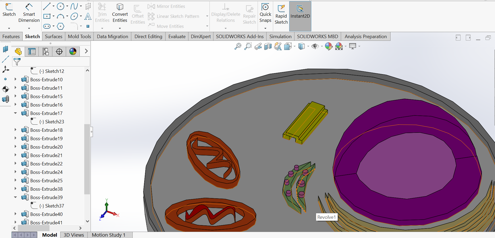

ISABELLA WATSON


Animal Cell Project
For this project, I collaborated with the "Feelin' DNA" club at UNC Chapel Hill to model and 3-D print an animal cell for visually impaired, elementary-school aged children. I tried to vary the textures of each organelle so they would be distinguishable simply through touch. The model was designed in SolidWorks, and I was trained and certified by UNC Chapel-Hill to use a 3-D printer to complete the project.Dimensioning the base of the half-cell.

Revolving a sketch of the nucleus and nucleolus.

Nucleus, nucleolus, ribosome shell, smooth endoplasmic reticulum, rough endoplasmic reticulum base.

A rim was added around the cell to represent the cell membrane. Extruded cylinders were added to distinguish the rough ER from the smooth ER. The rim and extrudes are large enough to be easily felt, providing a kinesthetically understandable experience.

Yellow stacked rectangles represent the centrioles. Smooth curves were added to the ribosome to further vary the cell's texture variation.

Completed animal cell representation.
Legend
Red Organelle: MitochondriaTeal Hemisphere: Ribosome
Dark Blue Ovals: Golgi Body
Green Textured Arches: Rough ER
Yellow Smooth Arches: Smooth ER
Yellow Stacked Rectangles: Centriole
Dark Purple Three-Quarter Sphere: Nuclear Envelope
Light Purple Quarter Sphere: Nucleolus
Raised Edge: Cell Membrane